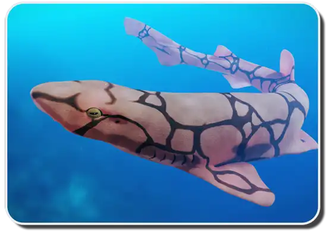
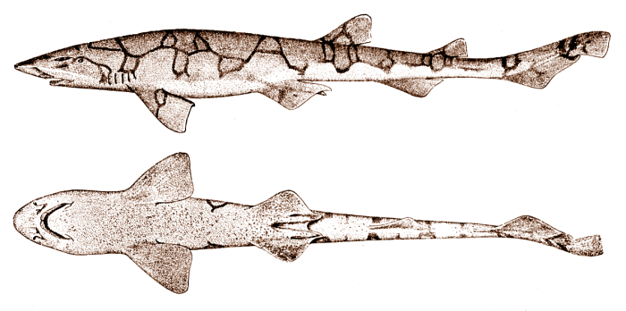

Introduction
Chain catsharks are small, fascinating sharks named after the chain-like patterns that cover their bodies. Their scientific name is Scyliorhinus retifer, and they belong to the catshark family. Unlike larger shark species, chain catsharks are not known for their size or strength. Instead, they stand out because of their unique appearance and interesting behaviors. These sharks are generally harmless to humans and are not considered aggressive. They spend most of their time swimming near the ocean floor. Even though they are small, they play an important role in their underwater ecosystem.

Appearance and Size
Chain catsharks have long, slender bodies with dark brown or black chain-shaped markings across their backs and sides. Their lighter-colored skin makes these patterns stand out. These markings also help them blend in with their surroundings. Most chain catsharks grow to about 1.5 to 2 feet long. This makes them relatively small compared to many other shark species. They have large eyes that help them see in the darker parts of the ocean. They also have two dorsal fins and small teeth that help them catch and hold their food.

Quick Facts
- Chain catsharks have chain-like patterns on their bodies.
- Their scientific name is Scyliorhinus retifer.
- They usually grow around 1.5 to 2 feet long.
- They have large eyes and two dorsal fins.